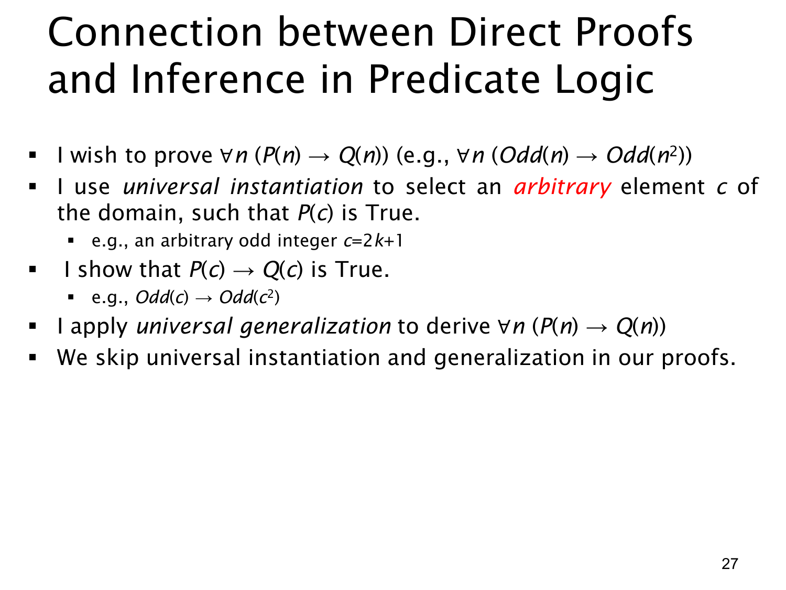

L1.3 · 第 27 页讲解原文
查看这一页课件

直接证明与全称量词推理的关系
要证明的若是一个全称条件命题
∀n(P(n)→Q(n)),
标准做法是取论域中任意对象 c，证明 P(c)→Q(c)；由于 c 没有额外的特殊限制，最后用全称概括（universal generalization）得到原命题。证明条件式 P(c)→Q(c) 时，再临时假设 P(c)，由此推导 Q(c)。课件用“任意奇整数 c=2k+1”来描述例子：对这个任取对象，在它为奇数的条件下，证明 c2 也为奇数。
这里要把两个层次分清：
- 全称层：c 是论域中的任意对象，不能是依赖某个特例的固定值。若论域为所有整数，c 起初只是任意整数。
- 条件层：为了证明 P(c)→Q(c)，暂时假设 P(c)。在奇数平方例子中，这才允许写 c=2k+1（其中 k 为整数），并推出 c2=2(2k2+2k)+1。
因此，不能把“对一个任意对象实例化”理解成全称实例化自动保证 P(c) 为真。全称实例化通常是从一个已知的全称陈述得到其关于 c 的实例；此处 P(c) 是证明条件式时引入的假设。课件把这些步骤压缩为课堂常用的自然语言证明，最后说在正式写证明时常省略显式标注“全称实例化”和“全称概括”。这些逻辑依据仍然存在：只有当 c 真正任意时，才可以从其证明推广到所有 n。